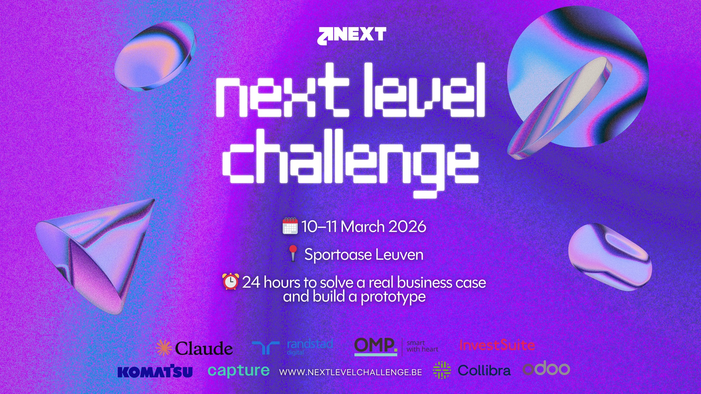

Hackathon Project
AI for Elderly People
A hackathon project created for NextLevelChallenge in Leuven. Our team built and presented the idea of an AI companion that can support elderly people in daily life, including simple conversation, medication help, health support, and emergency assistance.